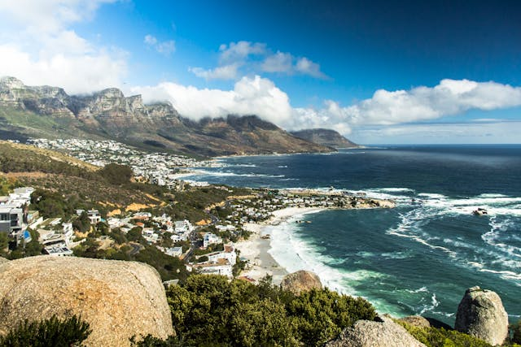

Famous for its sun, sea, and scenery, Cape Town is a beloved tourist destination for visitors from all over the world. Most definitely the defining beacon of Cape Town’s cityscape, Table Mountain is in fact one of the most instantly recognisable landmarks in the world. Take the famous Table Mountain cable car ride to the top of Table Mountain for breathtaking views of Cape Town, Table Bay, and the Atlantic Ocean coastline.
